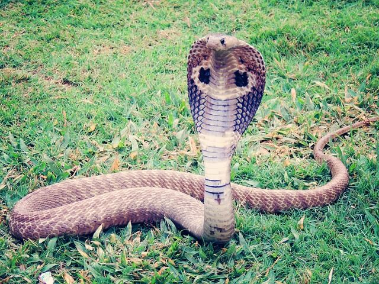

<html>
<font face color="white">
<body bgcolor="black">
<body topmargin="20px"; leftmargin="25px"; bgcolor="White">
<h1><a name= menú><center>Menú</center></a></h1>
<pre><center>
<font face="Arial"; size="4">
<a href=#CAIMAN>Caiman</a>
<a href=#CAMALEON>Camaleón</a>
<a href=#TORTUGA BOBA>Tortuga Boba</a>
<a href=#COBRA REAL>Cobra Real</a>
<a href=#LAGARTIJA>Lagartija</a>
<a href="index.html">PAGINA PRINCIPAL</a>
<pre>
<p>
<marquee bgcolor="red" behavoir="slide" direction="left" size="200"><a name=CAIMAN>Caiman(Caiman)</a></marquee>
<p>

<p>
Los caimanes habitan de manera repetida distribuidor en las regiones de América abarcando todas las zonas 
que van desde Sudamérica hasta México y un poco de América del Norte en la zona sur. se pueden encontrar a 
lo largo de las riberas de los ríos y arroyos, pero especialmente prosperan en lagos de llanuras aluviales,  
humedales y otros hábitats inundados con una cubierta vegetal densa y preferencia por corrientes lentas.
<hr align="center" width="100%" size="6" color="yellow">
<b> CARACTERISTICAS </b>
<ul type="square">
<li>Los caimanes forman la familia Alligatoridae junto con los aligátores.</li>
<li>Son de menor tamaño que los cocodrilos.</li>
<li>Son de carácter algo más apacible que los cocodrilos.</li>
<li>Solo habitan zonas de agua dulce en regiones subtropicales.</li>
<li>Se alimentan de peces, aves, mamíferos e incluso insectos o anfibios, pues pese a su tamaño, son animales que 
gestionan su energía de forma muy eficiente, así que en realidad precisan de muy poco alimento.</li>
</ul>
<a href=#menú><center>Regresar a menú</center></a>
<marquee bgcolor="red" behavoir="slide" direction="left" size="200"><a name=CAMALEON>Camaleón(Chamaeleonidae)</a></marquee>
<p>

<p>
La mayor parte de los camaleones habitan en África y en Madagascar, aunque algunas especies también se encuentran en partes 
del sur de Europa, Sri Lanka, India y Asia Menor. Diferentes especies habitan diferentes ambientes, como montañas, junglas, 
sabanas y a veces desiertos y estepas. Se cree que los individuos que viven en los sectores mediterráneos europeos derivan de 
ejemplares introducidos por el hombre en épocas remotas.
Los camaleones viven, en su mayor parte, en ambientes forestales, pero también se hallan algunos en matorrales, y algunas especies 
viven en el suelo, debajo de las hojas. Pueden pasar de un árbol a otro gracias a la habilidad prensil de su cola y de sus patas.
<hr align="center" width="100%" size="6" color="yellow">
<b> CARACTERISTICAS </b>
Aspectos que caracterizan a los camaleones es que poseen unos ojos grandes, capaces de moverse tan independientes, que le dan una vista 
de casi 360 grados. Su lengua, también le da un toque de particularidad. Es alargada y gracias a su punta pegajosa, es capaz de cazar a 
todas las presas que se les antojen, a una velocidad muy rápida.
Para montarse por las ramas de los árboles con mayor facilidad, esta especie tiene las patas divididas en dos únicos dedos. Mientras que su 
cola prensil también le da la capacidad de sujetarse de las ramas, como una de sus medidas de seguridad.
A pesar de que son rápidos para alimentarse estos animales carnívoros, para movilizarse resulta todo lo contrario. Hasta pueden quedarse inmóviles 
por varias horas.
<a href=#menú><center>Regresar a menú</center></a>
<marquee bgcolor="red" behavoir="slide" direction="left" size="200"><a name=TORTUGA BOBA>Tortuga Boba(Caretta caretta)</a></marquee>
<p>

<p>
es muy probable encontrar tortugas bobas en todos los océanos del mundo (Atlántico, Pacifico, Índico) y en el Mar Mediterráneo, teniendo mayor o 
menor presencia dependiendo de cuál se trate. La mayor concentración de estas tortugas está en el Atlántico, encontrándose entre las Costas de Norteamérica 
y el Golfo de México. En el Mar Mediterráneo esta es la especie de tortugas marinas con más presencia.
<hr align="center" width="100%" size="6" color="yellow">
<b> CARACTERISTICAS </b>
Las tortugas bobas son de las tortugas marinas más grandes que hay, en su adultez pueden llegar a medir más de 1 metro de largo y llegar a pesar hasta 200 kilogramos.
Sin embargo, estas medidas dependen totalmente del océano en el cual habiten, por esto las tortugas bobas del Océano Atlántico son más grandes que las del Mediterráneo. 
Por ejemplo, la tortuga boba más grande encontrada pesó 545 Kilogramos.
Tienen una cabeza muy grande, razón por la que también son conocidas como tortugas cabezonas.
Su caparazón es fuerte y resistente, el cual sirve de armadura para protegerse de posibles depredadores marinos, y además es el refugio de otros organismos como 
pequeños cangrejos.
<a href=#menú><center>Regresar a menú</center></a>
<marquee bgcolor="red" behavoir="slide" direction="left" size="200"><a name=COBRA REAL>Cobra Real(Ophiophagus Hannah)</a></marquee>
<p>

<p>
La cobra real habita de manera especial los bosques subtropicales del sureste asiático donde radica en madrigueras o bien arbustos gruesos. Prefiere los bosques de 
altura espesos que salpican con agua o bien lagos, y asimismo se pueden localizar en los pastizales. Por lo general, las viboras cobras ocupan matorrales de bambú llenos de 
presas potenciales o bien manglares espesos en zonas de anidación son rebosantes. Prefieren un tiempo húmedo donde la temperatura es de cerca de 35 grados centígrados. 
En consecuencia, la víbora puede encontrarse de manera frecuente en las zonas subtropicales. Debido a la destrucción del hábitat, muchas cobras rey escapan cara áreas 
agrícolas y por tanto se exponen a los humanos. Esto ha dado sitio a múltiples incidentes en los que o son asesinados, capturados o bien los ataques de víboras como 
una acción de autodefensa.
<hr align="center" width="100%" size="6" color="yellow">
<b> CARACTERISTICAS </b>
El aspecto más destacable de esta serpiente es, por supuesto, su enorme tamaño. Aunque su longitud media está entre los 3 y 4 metros, algunos ejemplares pueden alcanzar 
los 5 metros y medio. Esto la convierte en la serpiente venenosa más grande del mundo. Cuando son adultas, su color suele ser negro, marrón, verde o amarillo. Generalmente, 
las cobras reales son más oscuras por la parte dorsal que por la ventral y pueden presentar algún patrón rayado o ser sólidas. Los patrones y colores más impresionantes están 
situados en la «capucha» que despliegan cuando se sienten amenazadas.
El cuerpo de estas serpientes es bastante robusto. La cabeza es grande, ancha y cuenta con 2 grandes ojos, que le dan una mirada severa e intensa. Su dentición es 
proteroglifa: los colmillos curvados que inoculan el veneno no son muy grandes, están en la mandíbula superior y no son móviles.
<a href=#menú><center>Regresar a menú</center></a>
<marquee bgcolor="red" behavoir="slide" direction="left" size="200"><a name=LAGARTIJA>Lagartija(Lacertilia)</a></marquee>
<p>

<p>
La lagartija está adaptada a vivir en zonas cálidas o templadas. Existen muchas especies, aunque todas coinciden en dos necesidades básicas: tener acceso a los rayos 
del sol para poder calentarse y disponer de lugares donde poder esconderse y protegerse de sus depredadores.
Las más comunes suelen encontrarse en zonas rocosas, aunque también es fácil verlas entre los matorrales, praderas, bosques bajos o en las ciudades.
<hr align="center" width="100%" size="6" color="yellow">
<b> CARACTERISTICAS </b>
La lagartija puede alcanzar un promedio de 10 años de vida y a medir hasta 10 cm, sin incluir la cola. Esta cola es más larga que el cuerpo y en algunos casos puede 
triplicar su longitud, como sucede con la lagartija colilarga (Psammodromus algirus). Además, tienen la capacidad de desprenderse de su estructura más larga -la cola- 
al intentar escapar de sus depredadores.
En cuanto a su piel, está cubierta de escamas diminutas con mayor preponderancia en el dorso que en el abdomen. Los colores y tonalidades oscilan entre el verde oscuro, 
verde claro y pardo.
Machos y hembras pueden distinguirse debido a que los primeros poseen coloraciones más brillantes; en tanto, las hembras cuentan con tonalidades opacas.
<a href=#menú><center>Regresar a menú</center></a>
</font>
</center>
</body>
</html>

